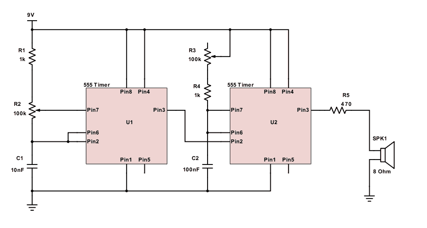

Interactive Virtual Atari Punk Console Sound Graph
what is it
It is a device that usues potentiometers to let the user change the frequency and the pulsewave of a square wave. It can be built with cheap parts by anyone. It was first made in the 1970s by Foreest Mims III and was furst called "Stepped Tone Generator." The name "Atari Punk Console" was given to the device by the "Kaustic Machines" website in the 2000s.
How its Made
you will need:
2x 1kΩ Resistors (R1, R4)
2x 100k Potentiometers (R2, R3)
1x 470Ω Resistor (R5)
1x 10nF Capacitor (C1)
1x 100nF Capacitor (C2)
2x 555 Timer Chips
1x A Pack Wires for Breadboarding
1x 9 Volt Battery
1x 9 Volt Battery to Breadboard Connector
1x Speaker / Audio Output Device
The breadboard is recommended as oppossed to PCB's but you can use either

Notice the 555 timers have:
both pin 5 are not going anywhere
both pin 3s are connected to either the speaker or the other timer
both pin 7s are connected to 555 the variable resistors
this means both 555 timers are set up pretty similarly